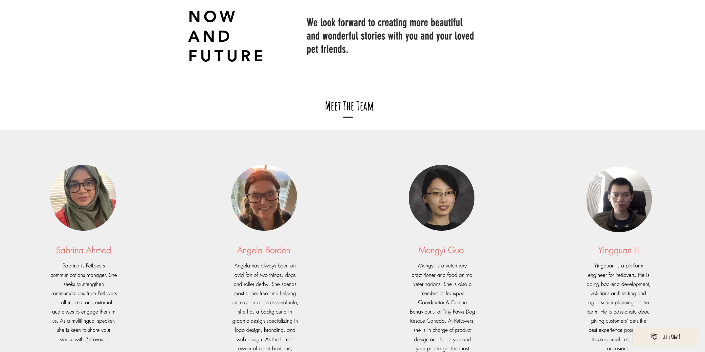

This is a showcase of my projects and a little bit about myself.
about
Mengyi is a graduate student at Virginia Tech in the program of Information Technology,
reshaping her skills through the radical development and innovation of computer technology.
She has been developing her understanding in this area by learning both frontend knowledge
(JavaScript,
HTML, CSS, and Vue) and backend expertise in Java, Spring Boot, RestAPI, and Maven.
Mengyi has the desire to utilize a broad educational background with excellent analytical,
technical, and programming skills to thrive as a software developer. 👩🏻💻
Mengyi has a great passion for both life and work and she is a lifelong learner. When she
disconnects from the social network, she reconnects herself with podcasts 🎙.
Currently she is looking to be a Software Development Intern or Entry-level Software Developer. 😃
Skills
Java, HTML, CSS, VUE, Kotlin, JavaScript.
Spring Boot, Junit. Jenkins, Swagger, Splunk, Red Hat.
IntelliJ, Eclipse, VS Code, Android Studio.
Jira, Confluence, Scrum.
E-commerce Website Building
-> Designed a bookstore website that has home, category, user login, cart, and checkout pages
using HTML, CSS, JavaScript, and Vue components.
-> Populated the bookstore database with various categories of books using SQL.
-> Consolidated REST Api service to handle user’s HTTP requests and access bookstore DAO objects
from the server side.
-> Used Vuex store to centralize all components and manage bookstore state.
-> Implemented Vuelidate to validate user data in the browser (client).
-> Hardened the website to handle invalid requests and unknown categories.
My ChatGPT
-> Created a React application that follows ChatGPT API reference and
documentation to create a
simplified version of ChatGPT. It could fetch data from the client to the server to OpenAI API.
Dream Catcher app
-> Used Kotlin to create an Android Dream Catcher app that users could note down and track
dreams.
-> Used Coroutine, Fragments, and Dialogue to create reusable components.
-> Used View Model to retain configuration change.
Simplified “AI” system
for Tetris playing: Compute the best of all possible
placements, using a cost-based algorithm. Choose the best placement for each shape and perform
calculations.
(Java, Junit)
Employed
Scrum methodology
to draft business plans including Products and Service, Marketing Plan, Operations, and
Financials research for two startups. Led a group project to build a pet store e-commerce
website. Previsioned additional technologies that may be incorporated in the store, such as AWS.
Click here

Used JavaScript to create a
lead tracker Chrome extension
to source potential leads by saving tab URL or capturing inputs to local storage.
Feel free to check my Youtube channel on the main page for more!
gallery
I love speding time on capturing every beautiful moment of life.